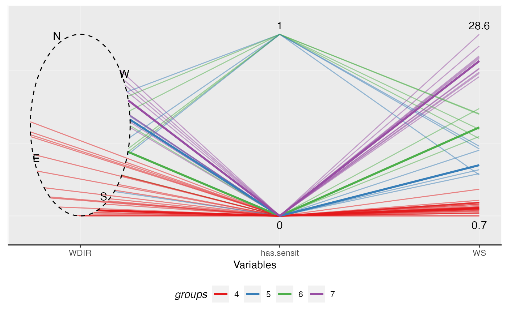

Making a parallel coordinates plot with the circular variables are plotted as ellipses. The function currently works well with data with one circular variable.
ggpcp( data, circ.var = NULL, is.degree = TRUE, rotate = 0, north = 0, cw = FALSE, order.appear = NULL, linetype = 1, size = 0.5, alpha = 0.5, clustering, medoids = NULL, cluster.col = NULL, show.medoids = FALSE, labelsize = 4, xlab = "Variables", ylab = NULL, legend.cluster = "groups" )
| data | Data set. |
|---|---|
| circ.var | Circular variable(s) in the data set, indicated by names or index in the data set. |
| is.degree | Whether the unit of the circular variables is degree or not
(radian). Default is |
| rotate | The rotate (offset, shift) of the circular variable, in radians. Default is 0 (no rotation). |
| north | What value of the circular variable is labeled North. Default is 0 radian. |
| cw | Which direction of the circular variable is considered increasing
in value, clockwise ( |
| order.appear | The order of appearance of the variables, listed by a vector of names or index. If set, length has to be equal to the number of variables in the data set. |
| linetype | Line type. Default is solid line. See details in
|
| size | Size of a line is its width in mm. Default is 0.5. See details in
|
| alpha | The transparency of the lines. Default is 0.1. |
| clustering | Cluster membership. |
| medoids | Vector of medoid observations of cluster. Only required when
|
| cluster.col | Color of clusters, indicating by a vector. If set, the
length of this vector must be equal to the number of clusters in
|
| show.medoids | Whether to highlight the median lines or not. Default is
|
| labelsize | The size of labels on the plot. Default is 4. |
| xlab | Labels for x-axis. |
| ylab | Labels for y-axis. |
| legend.cluster | Labels for group membership. Implemented by setting
label for ggplot |
A ggplot2 object.
# \donttest{ # Set color constant COLOR4 <- c("#e41a1c", "#377eb8", "#4daf4a", "#984ea3") # Reduce the size of the data for for sake of example speed set.seed(12345) wind_reduced <- wind_sensit_2007[sample.int(nrow(wind_sensit_2007), 50), ] sol42007 <- MonoClust(wind_reduced, cir.var = 3, nclusters = 4)#> Warning: binary variable(s) 1 treated as interval scaledlibrary(ggplot2) ggpcp(data = wind_reduced, circ.var = "WDIR", # To improve aesthetics rotate = pi*3/4-0.3, order.appear = c("WDIR", "has.sensit", "WS"), alpha = 0.5, clustering = sol42007$membership, medoids = sol42007$medoids, cluster.col = COLOR4, show.medoids = TRUE) + theme(panel.background = element_rect(color = "white"), panel.border = element_rect(color = "white", fill = NA), panel.grid.major = element_line(color = "#f0f0f0"), panel.grid.minor = element_blank(), axis.line = element_line(color = "black"), legend.key = element_rect(color = NA), legend.position = "bottom", legend.direction = "horizontal", legend.title = element_text(face = "italic"), legend.justification = "center")# }